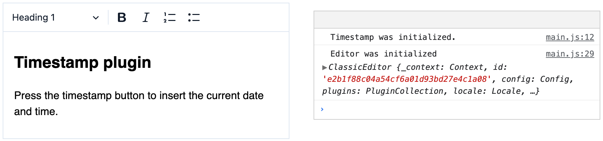

Creating a basic plugin
Creating a basic plugin
This guide will show you how to create a simple, basic plugin that will let the users insert timestamps into their content. This is a beginner-friendly tutorial, perfect for your first interaction with the CKEditor 5 framework. While is not necessary to be familiar with the CKEditor 5 Crash course to follow it, you should consider reading that one, too.
We will create a toolbar button that will insert the current date and time at the caret position into the document. If you want to see the final product of this tutorial before you plunge in, check out the live demo below.
# Let’s start!
# Quick start with the starter repository
The easiest way to set up your project is to grab the starter files from our GitHub repository for this tutorial. We gathered all the necessary dependencies there, including some CKEditor 5 packages and other files needed to build the editor. If you want to set everything up by yourself, please move to the DIY path.
The editor has already been created in the app.js file with some basic plugins. All you need to do is clone the repository, run the npm install command, and you can start coding right away.
The webpack is also already configured, so you can just use the npm run build command to build your application. Whenever you want to check anything in the browser, save the changes and run the build again. Then, refresh the page in your browser (remember to turn off caching, so that new changes are displayed instantly). At this stage, you can move to the Creating a plugin section of this guide.
# DIY path with setting up the environment from the scratch
If you want to set up the project yourself, you should follow the steps listed in the Let’s start section of the Quick Start guide.
When this is done, you need to install the following dependencies that will be necessary to proceed:
npm install --save \
@ckeditor/ckeditor5-dev-utils \
@ckeditor/ckeditor5-editor-classic \
@ckeditor/ckeditor5-essentials \
@ckeditor/ckeditor5-paragraph \
@ckeditor/ckeditor5-basic-styles \
@ckeditor/ckeditor5-theme-lark \
@ckeditor/ckeditor5-heading \
@ckeditor/ckeditor5-list \
@ckeditor/ckeditor5-core \
@ckeditor/ckeditor5-ui
In this guide especially useful will be @ckeditor/ckeditor5-core package, which contains the Plugin class, and the @ckeditor/ckeditor5-ui package, which contains the UI library and the framework.
We are going to write the whole plugin in your base app.js file. It should look like the code listed below.
// app.js
import ClassicEditor from '@ckeditor/ckeditor5-editor-classic/src/classiceditor';
import Essentials from '@ckeditor/ckeditor5-essentials/src/essentials';
import Paragraph from '@ckeditor/ckeditor5-paragraph/src/paragraph';
import Heading from '@ckeditor/ckeditor5-heading/src/heading';
import List from '@ckeditor/ckeditor5-list/src/list';
import Bold from '@ckeditor/ckeditor5-basic-styles/src/bold';
import Italic from '@ckeditor/ckeditor5-basic-styles/src/italic';
ClassicEditor
.create( document.querySelector( '#editor' ), {
plugins: [ Essentials, Paragraph, Heading, List, Bold, Italic ],
toolbar: [ 'heading', 'bold', 'italic', 'numberedList', 'bulletedList' ]
} )
.then( editor => {
console.log( 'Editor was initialized', editor );
} )
.catch( error => {
console.error( error.stack );
} );
Your index.html should look as listed below. The editor will load with the HTML content you put inside the <div id="editor"> tags.
<!DOCTYPE html>
<html lang="en">
<head>
<meta charset="utf-8">
<title>CKEditor 5 Framework – timestamp plugin</title>
</head>
<body>
<div id="editor">
<h2>Timestamp plugin</h2>
<p>Press the timestamp button to insert the current date and time.</p>
</div>
<script src="dist/bundle.js"></script>
</body>
</html>
Now you just need to build your application using the command below.
./node_modules/.bin/webpack --mode development
After opening the index.html in the browser, you should be able to see the working editor ready for plugin development.
# Creating a plugin
All features in the CKEditor 5 are powered by plugins. To create our custom timestamp plugin, we need to import the base Plugin class.
We can now create a Timestamp class that extends the basic Plugin class. After we define it, we can add it to the editor’s plugins array.
import ClassicEditor from '@ckeditor/ckeditor5-editor-classic/src/classiceditor';
import Essentials from '@ckeditor/ckeditor5-essentials/src/essentials';
import Paragraph from '@ckeditor/ckeditor5-paragraph/src/paragraph';
import Heading from '@ckeditor/ckeditor5-heading/src/heading';
import List from '@ckeditor/ckeditor5-list/src/list';
import Bold from '@ckeditor/ckeditor5-basic-styles/src/bold';
import Italic from '@ckeditor/ckeditor5-basic-styles/src/italic';
import Plugin from '@ckeditor/ckeditor5-core/src/plugin';
class Timestamp extends Plugin {
init() {
console.log( 'Timestamp was initialized.' );
}
}
ClassicEditor
.create( document.querySelector( '#editor' ), {
// Add the Timestamp plugin to config.plugins array.
plugins: [
Essentials, Paragraph, Heading, List, Bold, Italic, Timestamp
],
toolbar: [ 'heading', 'bold', 'italic', 'numberedList', 'bulletedList' ]
} )
.then( editor => {
console.log( 'Editor was initialized', editor );
} )
.catch( error => {
console.error( error.stack );
} );
Rebuild the editor and check in your console whether the timestamp was initialized. You should see this in the browser (on the left) and in the browser’s development console (on the right):

# Registering a toolbar button
CKEditor 5 has a rich UI library. We will grab the ButtonView class for our toolbar button from there.
Once we create a new instance of ButtonView, we will be able to customize it by setting its properties. We will create a label, which will be visible on the button thanks to the withText property.
We also need to register our button in the editor’s UI componentFactory, so it can be displayed in the toolbar. To do it, we will pass the name of the button in the componentFactory.add method, to be able to add it into the toolbar array.
// Imports from the previous example
// ...
import ButtonView from '@ckeditor/ckeditor5-ui/src/button/buttonview';
class Timestamp extends Plugin {
init() {
const editor = this.editor;
// The button must be registered among the UI components of the editor
// to be displayed in the toolbar.
editor.ui.componentFactory.add( 'timestamp', () => {
// The button will be an instance of ButtonView.
const button = new ButtonView();
button.set( {
label: 'Timestamp',
withText: true
} );
return button;
} );
}
}
ClassicEditor
.create( document.querySelector( '#editor' ), {
plugins: [
Essentials, Paragraph, Heading, List, Bold, Italic, Timestamp
],
// Add the Timestamp button to the config.toolbar array.
toolbar: [
'heading', 'bold', 'italic', 'numberedList', 'bulletedList', 'timestamp'
]
} )
.then( editor => {
console.log( 'Editor was initialized', editor );
} )
.catch( error => {
console.error( error.stack );
} );
Rebuild the editor, and you should be able to see the timestamp button. It does not do anything just yet, so let’s change that.
# Inserting a timestamp
We can now define the core functionality of our plugin – the action that should be executed once our button is clicked.
To insert anything into the document structure, we need to change the model using the model’s change() method. This way we get access to the model writer.
What is the model? It is a DOM-like structure, that is converted into the view, which is the layer that the user interacts with. You can read more about the model and the view in dedicated guides.
We will use the insertContent() method to insert our timestamp into the document. Inside, we just need to create a new text node with the writer.createText() method.
class Timestamp extends Plugin {
init() {
const editor = this.editor;
editor.ui.componentFactory.add( 'timestamp', () => {
// Button-related code from the previous example
// ...
// Execute a callback function when the button is clicked.
button.on( 'execute', () => {
const now = new Date();
// Change the model using the model writer.
editor.model.change( writer => {
// Insert the text at the user's current position.
editor.model.insertContent( writer.createText( now.toString() ) );
} );
} );
return button;
} );
}
}
Well done! When you rebuild the editor, you should be able to see that your timestamp plugin is working.
# Demo
The timestamp plugin
Use the timestamp toolbar button to insert current date and time.
# Full code
If you got lost at any point, see the final implementation of the plugin. You can paste the code from app.js, or clone and install the whole thing, and it will run out of the box.
What’s next
If you want to continue learning, move on to our more advanced tutorials, where we will create an abbreviation plugin or read more about the CKEditor 5 framework.
Every day, we work hard to keep our documentation complete. Have you spotted outdated information? Is something missing? Please report it via our issue tracker.